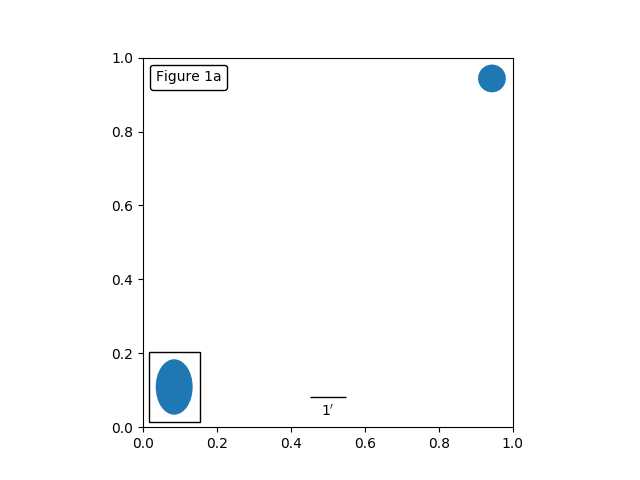

Version 2.2.4
Note
Click here to download the full example code
This example illustrates the use of the anchored objects without the helper classes found in the Matplotlib axes_grid1 Toolkit. This version of the figure is similar to the one found in Simple Anchored Artists, but it is implemented using only the matplotlib namespace, without the help of additional toolkits.
from matplotlib.patches import Rectangle, Ellipse
from matplotlib.offsetbox import AnchoredOffsetbox, AuxTransformBox, VPacker,\
TextArea, DrawingArea
class AnchoredText(AnchoredOffsetbox):
def __init__(self, s, loc, pad=0.4, borderpad=0.5,
prop=None, frameon=True):
self.txt = TextArea(s,
minimumdescent=False)
super(AnchoredText, self).__init__(loc, pad=pad, borderpad=borderpad,
child=self.txt,
prop=prop,
frameon=frameon)
class AnchoredSizeBar(AnchoredOffsetbox):
def __init__(self, transform, size, label, loc,
pad=0.1, borderpad=0.1, sep=2, prop=None, frameon=True):
"""
Draw a horizontal bar with the size in data coordinate of the given
axes. A label will be drawn underneath (center-aligned).
pad, borderpad in fraction of the legend font size (or prop)
sep in points.
"""
self.size_bar = AuxTransformBox(transform)
self.size_bar.add_artist(Rectangle((0, 0), size, 0, ec="black", lw=1.0))
self.txt_label = TextArea(label, minimumdescent=False)
self._box = VPacker(children=[self.size_bar, self.txt_label],
align="center",
pad=0, sep=sep)
AnchoredOffsetbox.__init__(self, loc, pad=pad, borderpad=borderpad,
child=self._box,
prop=prop,
frameon=frameon)
class AnchoredEllipse(AnchoredOffsetbox):
def __init__(self, transform, width, height, angle, loc,
pad=0.1, borderpad=0.1, prop=None, frameon=True):
"""
Draw an ellipse the size in data coordinate of the give axes.
pad, borderpad in fraction of the legend font size (or prop)
"""
self._box = AuxTransformBox(transform)
self.ellipse = Ellipse((0, 0), width, height, angle)
self._box.add_artist(self.ellipse)
AnchoredOffsetbox.__init__(self, loc, pad=pad, borderpad=borderpad,
child=self._box,
prop=prop,
frameon=frameon)
class AnchoredDrawingArea(AnchoredOffsetbox):
def __init__(self, width, height, xdescent, ydescent,
loc, pad=0.4, borderpad=0.5, prop=None, frameon=True):
self.da = DrawingArea(width, height, xdescent, ydescent)
super(AnchoredDrawingArea, self).__init__(loc, pad=pad,
borderpad=borderpad,
child=self.da,
prop=None,
frameon=frameon)
if __name__ == "__main__":
import matplotlib.pyplot as plt
ax = plt.gca()
ax.set_aspect(1.)
at = AnchoredText("Figure 1a",
loc=2, frameon=True)
at.patch.set_boxstyle("round,pad=0.,rounding_size=0.2")
ax.add_artist(at)
from matplotlib.patches import Circle
ada = AnchoredDrawingArea(20, 20, 0, 0,
loc=1, pad=0., frameon=False)
p = Circle((10, 10), 10)
ada.da.add_artist(p)
ax.add_artist(ada)
# draw an ellipse of width=0.1, height=0.15 in the data coordinate
ae = AnchoredEllipse(ax.transData, width=0.1, height=0.15, angle=0.,
loc=3, pad=0.5, borderpad=0.4, frameon=True)
ax.add_artist(ae)
# draw a horizontal bar with length of 0.1 in Data coordinate
# (ax.transData) with a label underneath.
asb = AnchoredSizeBar(ax.transData,
0.1,
r"1$^{\prime}$",
loc=8,
pad=0.1, borderpad=0.5, sep=5,
frameon=False)
ax.add_artist(asb)
plt.draw()
plt.show()
Keywords: matplotlib code example, codex, python plot, pyplot Gallery generated by Sphinx-Gallery